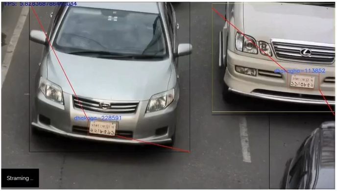

Automated License Plate Recognition / Registration System
The ALPR system, an epitome of cutting-edge technology, utilizes Optical Character Recognition (OCR) on images for precise extraction of vehicle registration data. Driven by GRPC for seamless client-server communication, it integrates YOLOv3 and YOLOv4 models for meticulous object detection and a MongoDB NoSQL database for efficient data storage. With a character-level accuracy of 93%, the ALPR system stands as a robust solution for real-time vehicle tracking and registration.